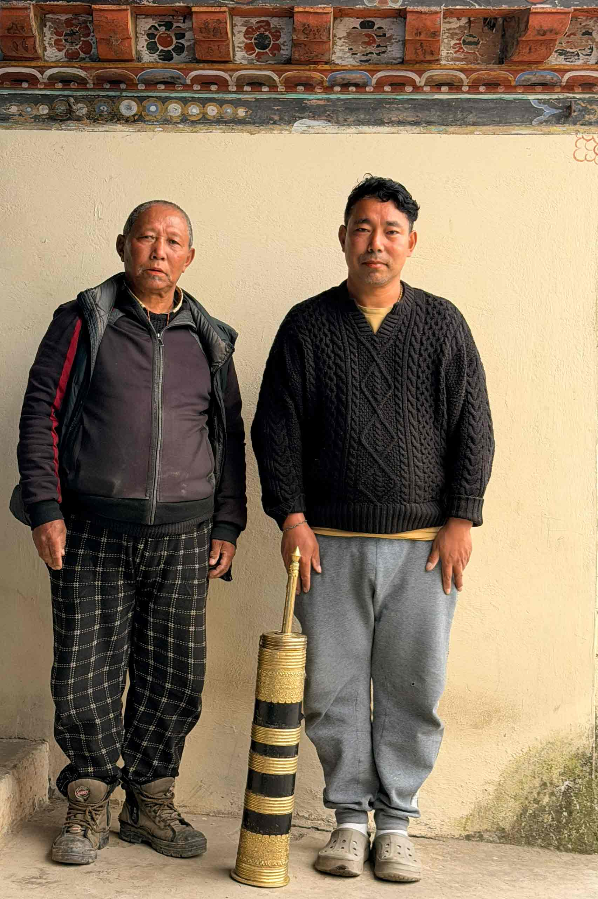

7 Days · 6 Nights
A journey into the land and its people
The Journey
Bhutan is not a backdrop. It is a living world with its own wisdom, its own rhythm, its own way of being. This journey takes you into the heart of it — into homes, kitchens, and conversations that stay with you long after you leave. What you experience depends on when you arrive. The land moves with the seasons, and so does this journey.
Arrive into the valley. A visit to a sacred 15th-century temple with a monk who explains its murals and the daily life of devotion that continues here unchanged. Afternoon at a family-owned craft brewery — a small window into how Bhutan holds old and new at once. Evening stroll through town, no agenda.
A day shaped entirely by the season you arrive in. Rice planting by hand in summer, harvest alongside farming families in autumn, apple picking in the cool mountain air come October. Farm lunch. Traditional archery, Khuru, and a taste of home-brewed ara. Afternoon inside a home nearly 500 years old — a private collection of sacred objects rarely seen by outsiders. The day closes with a sand mandala, grain by grain.
Cross one of the highest motorable passes in Bhutan. Pause to hang prayer flags at the summit. Descend through forest to the oldest nunnery in Bhutan — built into the cliffside, home to around fifty nuns. Sit with them, share a meal, spend time in the stillness. Arrive in the hidden valley as evening falls. A bonfire, and a 150-year-old song sung in honour of the valley's guardian deity — performed, if conditions allow, by the women who still carry it.
Morning hike along the river through open farmland and small communities. Picnic lunch along the way. Drive to the capital as evening settles. A slow stroll through the city. No programme. Just arrival.
Morning practice rooted in Bhutan's healing tradition — meditation and gentle healing movements guided by a traditional medicine practitioner, at the base of the great golden Buddha overlooking the capital valley. A wellness consultation follows, then a cooking demonstration and traditional lunch at a heritage village home. Afternoon: a prayer flag printing workshop at one of Bhutan's most celebrated schools of traditional arts. Drive back to the first valley.
An early start through pine forest and prayer flags to Tiger's Nest — the monastery perched 900 metres above the valley floor, built around the cave where Guru Rinpoche is said to have meditated. Inside: small temples, incense, deep stillness. Lunch with the monastery visible across the cliff. Evening: a hot stone bath infused with medicinal herbs — the kind of thing your body remembers long after you leave.
After breakfast, transfer to the airport for your onward journey.